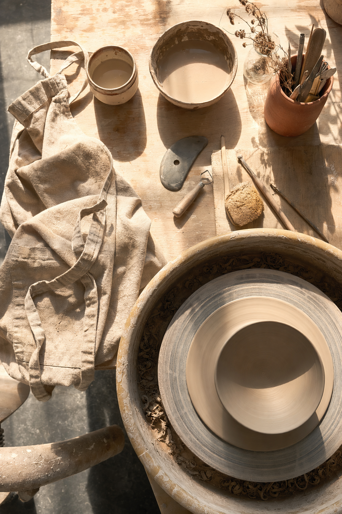
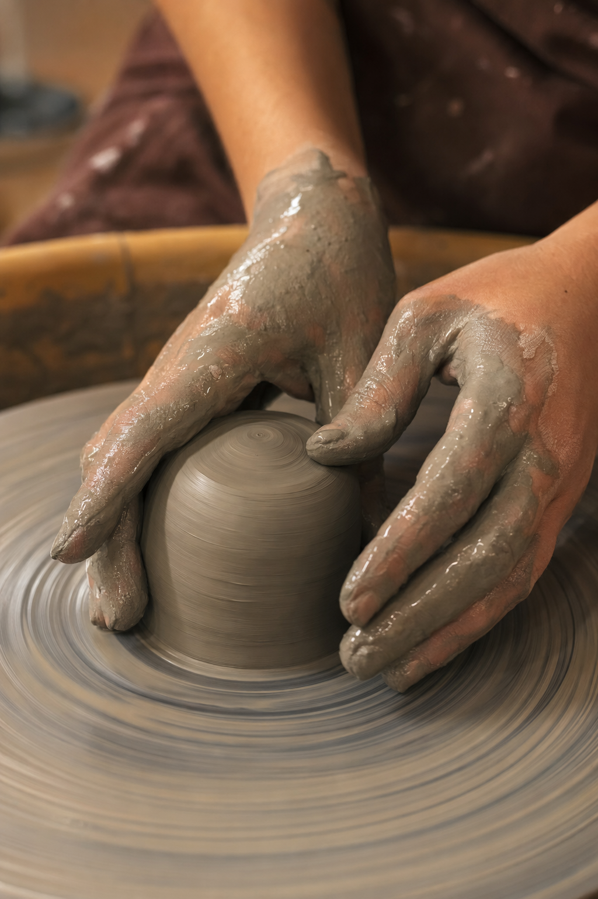
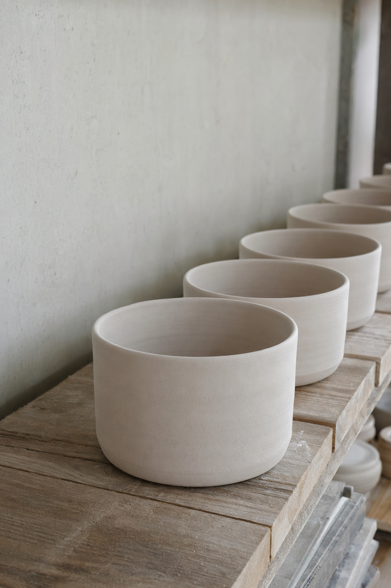
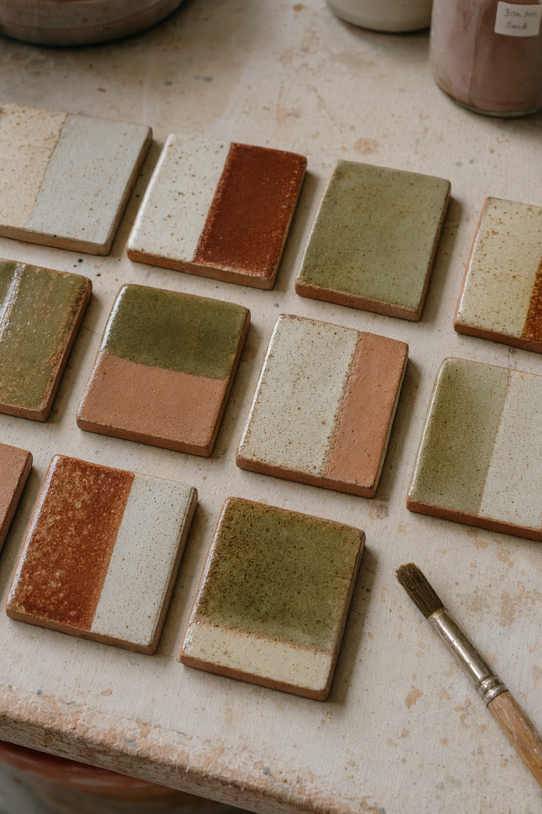
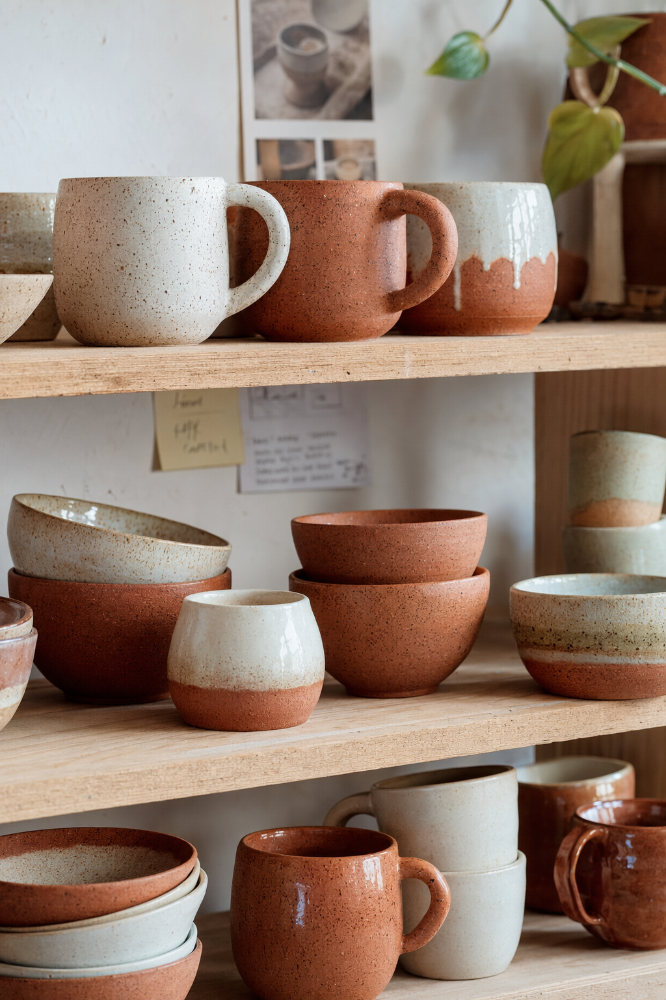

What You'll Learn
Slow Craft,
Steady Hands
Six Seats Only
 YOURBRAND
YOURBRAND
Week One
Centering & Touch
No wobble, no guessing.
YOURBRAND
Week Three
Form Before Speed
Steady beats fast.
YOURBRAND
Week Five
Glaze With Intention
Colour is a decision.
YOURBRANDStop Scrolling
Start Shaping

Seats Open — Enroll
Six seats, every season.
YOURBRAND